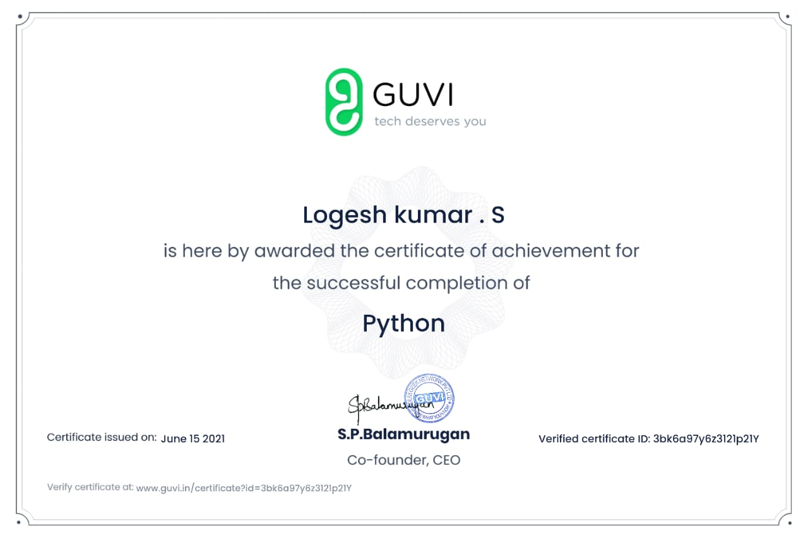

Project
I have started learning front end web development during this one month,I have developed one web pages during my course time.These is the websites that i have developed.
Websites

certificates
this are some certificates that i got in coding
